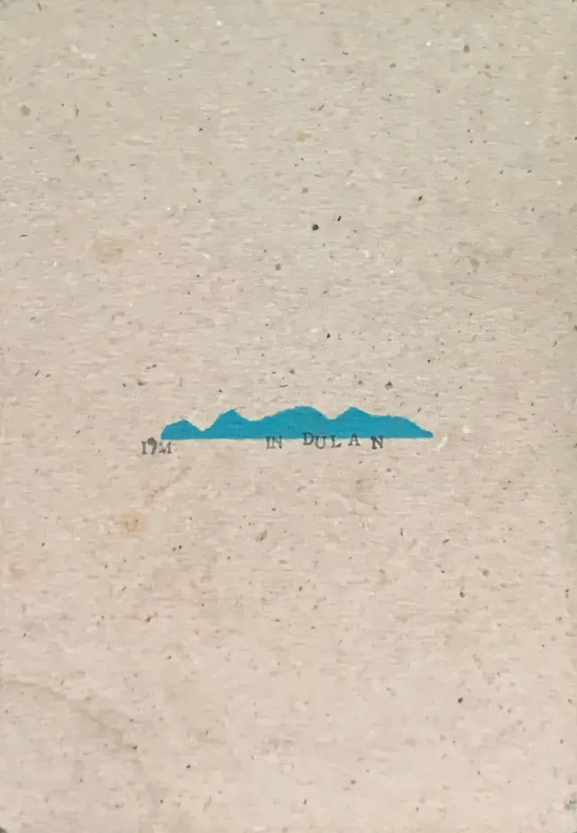

The first days一開始
老實說，一開始滿痛苦的。畫出來的東西跟腦中想的差很多，真的很醜，就算跟著教學畫，比例還是會歪歪的、線條都抖抖的，覺得很挫折，但就是硬著頭皮把它畫完。

Overview
我一直覺得自己不太會畫畫。某天看到一位 YouTuber 每天畫一張圖的影片，看著看著突然想：既然有時間，那我也試試看吧。
於是給自己定了一個很小的規則：每天抽出十幾分鐘，畫什麼都好，連續 30 天，看看會發生什麼事。
老實說，一開始滿痛苦的。畫出來的東西跟腦中想的差很多，真的很醜，就算跟著教學畫，比例還是會歪歪的、線條都抖抖的，覺得很挫折，但就是硬著頭皮把它畫完。
大概過了一半，手開始比較聽話，臉的比例、頭髮的線條慢慢抓得到感覺。翻回前面的頁面，才發現自己真的一點一點在進步。到最後，每天的十幾分鐘從「要撐過去」變成一件會期待的事。
Sketchbook
